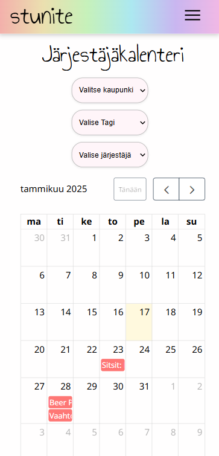
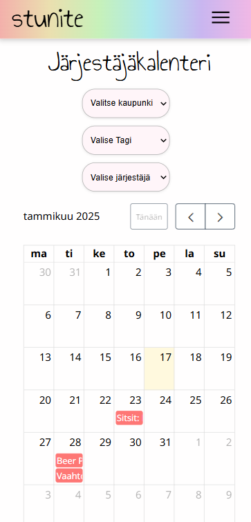

Tapahtumahaku suodatus:
UpdateFilteredEvents(eventsData: Event[]) päivittää suodatetut tapahtumat käyttäjän hakutermien ja valintojen perusteella. Se myös lajittelee tulokset aikajärjestykseen alkamispäivän mukaan. Suodatetut tapahtumat tallennetaan filteredEventData - muuttujaan.
updateFilteredEvents(eventsData: Event[]) {
this.filteredEventData = computed(() => {
const search = this.searchTerm().toLowerCase();
const city = this.selectedCity();
const tag = this.selectedTag();
const { start, end } = this.selectedDateRange();
let filteredEvents = eventsData.filter((event) => {
const matchesSearch = event.eventName.toLowerCase().includes(search);
const matchesCity = city ? event.city === city : true;
const matchesTag = tag ? event.eventTags?.includes(tag) : true;
let matchesDate = true;
if (start || end) {
const eventStartDate = this.parseCustomDate(event.date);
matchesDate =
(!start || eventStartDate >= new Date(start)) &&
(!end || eventStartDate <= new Date(end));
}
const currentDate = new Date();
currentDate.setHours(0, 0, 0, 0);
// Use endingDate if available, otherwise fallback to event.date (starting date)
const eventEndDate = event.endingDate
? this.parseCustomDate(event.endingDate)
: this.parseCustomDate(event.date); // Fall back to starting date
eventEndDate.setHours(0, 0, 0, 0);
const isFutureEvent = eventEndDate >= currentDate;
return (
matchesSearch &&
matchesCity &&
matchesTag &&
matchesDate &&
isFutureEvent
);
});
filteredEvents = filteredEvents.sort((a, b) => {
const dateA = this.parseCustomDate(a.date);
const dateB = this.parseCustomDate(b.date);
return dateA.getTime() - dateB.getTime();
});
return filteredEvents;
});
}


 
